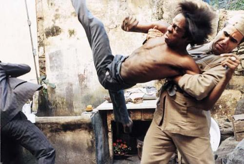
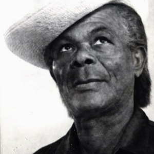
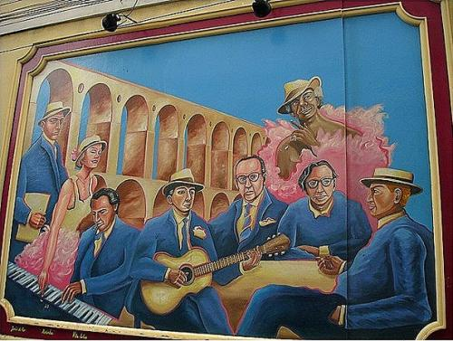
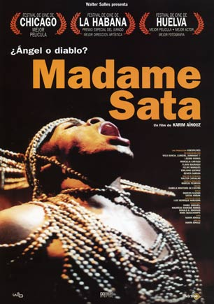
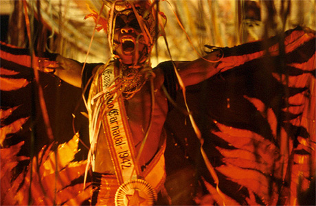

Мадам Сатана (Madame Satã) — бандит и трансвестит из Рио

Недавно читая книгу «Capoeira — The History of Afro-Brazilian Martial Art» (M. R. Assunção) наткнулся на такой интересный пассаж (перевод мой):
„[..] И наконец некоторые городские хулиганы, или маландрос, оставшиеся от старых капоэйра-банд, до сих пор использовали капоэйру, как инструмент в их ежедневных конфликтах, главным образом в квартале Красных Фонарей в Лапе (район в Рио). Особенно выделялся из таких Мадам Сатана (Madame Satã), трансвестит, к которому предписывалось избиение трех и более полицейских в одной драке. Его боевое имя (кличка) было дано ему из-за того, что он носил костюм дьяволицы во время карнавалов. Этот гей-капоэйриста скончался приблизительно в 1968 году.“Этот пример из жизни кариокской капоэйры (капоэйры из Рио) меня очень заинтересовал, а спустя несколько дней один мой знакомый капоэйрист в случайном разговоре упомянул фильм «Madame Satã» (2002), как лучший фильм о реальной капоэйре. Мне стало любопытной, полез в Google и обнаружил, что IMDB-рейтинг фильма — 6.9 (!), что довольно высоко по сравнению с другими фильмами, так или иначе связанными с капоэйрой. Еще спустя какое-то время фильм был найден на торрентах, скачен и посмотрен. Делюсь впечатлениями и рассказываю об этом легендарном персонаже.
Manduca da Praia todos temiam seu pisar.
Madame Satã nem a policia podia parar.
Arcos da Lapa tem história pra contar.
Se tu for a Lapa capoeira vai jogar.— Из песни «E a Lapa, e a Lapa»
Удивительно, что даже такой авторитетный автор, как M. R. Assunção немного неверно рассказывает о персонаже и ошибается в дате его смерти. Далее биография Мамад Сатаны из английской и бразильской википедии:
João Francisco dos Santos Sant´Anna (1900-1976), более известный как Madame Satã, известный драг-квин, капоэйрист и представитель ночной жизни Рио в первой половине ХХ-го века.
Родился в семье бывших рабов в штате Пернамбуку с семнадцатью братьями и сестрами. Рассказывают, что в детстве семья его продала и обменяла на лошадь. Жил в Ресифи, затем переехал в Рио, где бедствовал, работал грузчиком и выполнял прочие мелкие работы. Позже работал вышибалой в барах и сутенером, точнее „оберегал“ местных проституток от проблем с клиентами.
Жоау жилось очень нелегко в богемном Рио, т.к. он был чёрным, гомосексуалистом и бедным. Часто бывал участником драк с белыми клиентами местных увеселительных заведений и с полицейскими, обычно из-за унижений, которые слышал в свой адрес и не мог терпеть. Ему предписывается фраза «Я родился маландро и так я буду жить» (в фильме: «Nasci pra ter vida de malandro
e vou levar é rasgada»).
В английской Википедии сообщается, что он был обвинен в нескольких убийствах и в общей сложности провел 27 лет в тюрьме. Также был участником банд и отцом семерых детей.
Интересно, что помимо криминальной деятельности, Жоау тянулся к искусству и позже стал известен, как артист и исполнитель в кабаре-шоу, где часто переодевался в женщину. В 1942 году (если верить фильму, то сразу после десятилетнего срока в тюрьме за убийство) он принял участие в карнавале, где и был одет в костюм женщины-дьяволицы, который был навеян фильмом Cecil B. DeMille „Madame Satã“, из-за которого и получил свое легендарное прозвище.

Умер Жоау незадолго после своего последнего освобождения из тюрьмы, в апреле 1976 года у себя дома, в возрасте 76 лет.
В 2002 году бразильский режиссер Karim Aïnouz снял фильм-биографию о Мадам Сатане. Главную роль сыграл Lázaro Ramos. Фильм был удостоит нескольких бразильских и международных премий.
Что касается фильма, то мне он в целом понравился. Я люблю биографические книги и фильмы, и этот не был исключением. Немного «гомосексуальный» для меня (есть там пара откровенных сцен), напомнил местами фильмы Альмодовара. Интересно было посмотреть на кариокскую маландражем, которая была показана так, как описывается в многочисленных источниках. Жаль, что фильм показал только часть его жизни (до 1942 года), ведь Жоау прожил достаточно долгую жизнь и многое интересное случилось после 42-го. Также было интересно и хорошо показана трансформация из уличного бандита в артиста. Человек мечтал стать артистом долгое время и устал от драк и насилия, но обстоятельства того времени не давали быть ему самим собой. Неудивительно, что сейчас он считается иконой черного и LGBT сообщества в Бразилии и символом сопротивления.

Источники:
— Madame Satã: WikiPedia PT, WikiPedia EN
— «Capoeira — The History of Afro-Brazilian Martial Art» (M. R. Assunção)
— DURST, ROGÉRIO. Madame Satã: com o diabo no corpo.